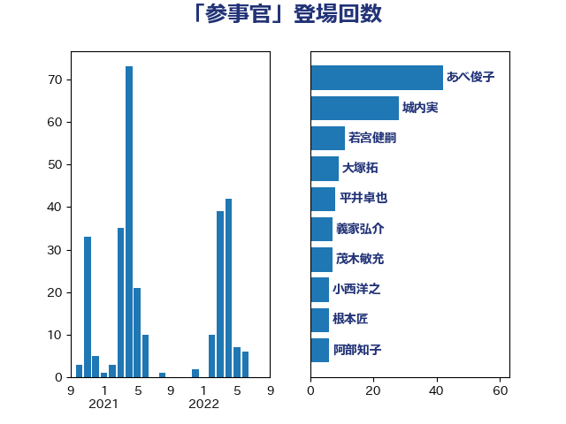

単語「参事官」

| あべ俊子 | 自由民主党 | 42 回 |
| 城内実 | 自由民主党 | 28 回 |
| 若宮健嗣 | 自由民主党 | 11 回 |
| 大塚拓 | 自由民主党 | 9 回 |
| 平井卓也 | 自由民主党 | 8 回 |
| 義家弘介 | 自由民主党 | 7 回 |
| 茂木敏充 | 自由民主党 | 7 回 |
| 小西洋之 | 立憲民主党 | 6 回 |
| 根本匠 | 自由民主党 | 6 回 |
| 阿部知子 | 立憲民主党 | 6 回 |
| 原口一博 | 立憲民主党 | 5 回 |
| 後藤祐一 | 立憲民主党 | 4 回 |
| 緒方林太郎 | 無所属 | 4 回 |
| 金子恭之 | 自由民主党 | 4 回 |
| 鈴木馨祐 | 自由民主党 | 4 回 |
| 鎌田さゆり | 立憲民主党 | 4 回 |
| あかま二郎 | 自由民主党 | 3 回 |
| 伊東良孝 | 自由民主党 | 3 回 |
| 浮島智子 | 公明党 | 3 回 |
| 西村智奈美 | 立憲民主党 | 3 回 |
| 中根一幸 | 自由民主党 | 2 回 |
| 井上英孝 | 日本維新の会 | 2 回 |
| 古屋範子 | 公明党 | 2 回 |
| 古川禎久 | 自由民主党 | 2 回 |
| 木原誠二 | 自由民主党 | 2 回 |
| 杉久武 | 公明党 | 2 回 |
| 林芳正 | 自由民主党 | 2 回 |
| 橋本岳 | 自由民主党 | 2 回 |
| 永岡桂子 | 自由民主党 | 2 回 |
| 足立康史 | 日本維新の会 | 2 回 |
| 鈴木宗男 | 日本維新の会 | 2 回 |
| 井出庸生 | 自由民主党 | 1 回 |
| 伊藤岳 | 日本共産党 | 1 回 |
| 伊藤忠彦 | 自由民主党 | 1 回 |
| 加藤勝信 | 自由民主党 | 1 回 |
| 嘉田由紀子 | 無所属 | 1 回 |
| 塩川鉄也 | 日本共産党 | 1 回 |
| 太栄志 | 立憲民主党 | 1 回 |
| 太田房江 | 自由民主党 | 1 回 |
| 宮口治子 | 立憲民主党 | 1 回 |
| 小林史明 | 自由民主党 | 1 回 |
| 小林鷹之 | 自由民主党 | 1 回 |
| 山口壯 | 自由民主党 | 1 回 |
| 島尻安伊子 | 自由民主党 | 1 回 |
| 平口洋 | 自由民主党 | 1 回 |
| 志位和夫 | 日本共産党 | 1 回 |
| 有村治子 | 自由民主党 | 1 回 |
| 松島みどり | 自由民主党 | 1 回 |
| 松野博一 | 自由民主党 | 1 回 |
| 森屋宏 | 自由民主党 | 1 回 |
| 牧島かれん | 自由民主党 | 1 回 |
| 玄葉光一郎 | 立憲民主党 | 1 回 |
| 田嶋要 | 立憲民主党 | 1 回 |
| 田村憲久 | 自由民主党 | 1 回 |
| 田村智子 | 日本共産党 | 1 回 |
| 盛山正仁 | 自由民主党 | 1 回 |
| 萩生田光一 | 自由民主党 | 1 回 |
| 薗浦健太郎 | 自由民主党 | 1 回 |
| 赤羽一嘉 | 公明党 | 1 回 |
| 足立敏之 | 自由民主党 | 1 回 |
| 長峯誠 | 自由民主党 | 1 回 |
| 長浜博行 | 無所属 | 1 回 |
| 関芳弘 | 自由民主党 | 1 回 |
| 阿部司 | 日本維新の会 | 1 回 |
| 高橋光男 | 公明党 | 1 回 |
| 高良鉄美 | 無所属 | 1 回 |
| 高鳥修一 | 自由民主党 | 1 回 |